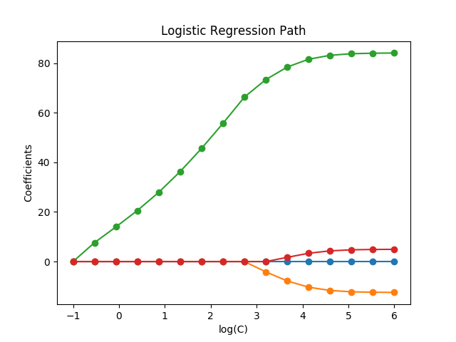

Note
Click here to download the full example code or run this example in your browser via Binder
1.18.8. Regularization path of L1- Logistic Regression¶
Train l1-penalized logistic regression models on a binary classification problem derived from the Iris dataset.
The models are ordered from strongest regularized to least regularized. The 4 coefficients of the models are collected and plotted as a “regularization path”: on the left-hand side of the figure (strong regularizers), all the coefficients are exactly 0. When regularization gets progressively looser, coefficients can get non-zero values one after the other.
Here we choose the SAGA solver because it can efficiently optimize for the Logistic Regression loss with a non-smooth, sparsity inducing l1 penalty.
Also note that we set a low value for the tolerance to make sure that the model has converged before collecting the coefficients.
We also use warm_start=True which means that the coefficients of the models are reused to initialize the next model fit to speed-up the computation of the full-path.
Out:
Computing regularization path ...
This took 1.802s
print(__doc__)
# Author: Alexandre Gramfort <alexandre.gramfort@inria.fr>
# License: BSD 3 clause
from time import time
import numpy as np
import matplotlib.pyplot as plt
from sklearn import linear_model
from sklearn import datasets
from sklearn.svm import l1_min_c
iris = datasets.load_iris()
X = iris.data
y = iris.target
X = X[y != 2]
y = y[y != 2]
X /= X.max() # Normalize X to speed-up convergence
# #############################################################################
# Demo path functions
cs = l1_min_c(X, y, loss='log') * np.logspace(0, 7, 16)
print("Computing regularization path ...")
start = time()
clf = linear_model.LogisticRegression(penalty='l1', solver='saga',
tol=1e-6, max_iter=int(1e6),
warm_start=True)
coefs_ = []
for c in cs:
clf.set_params(C=c)
clf.fit(X, y)
coefs_.append(clf.coef_.ravel().copy())
print("This took %0.3fs" % (time() - start))
coefs_ = np.array(coefs_)
plt.plot(np.log10(cs), coefs_, marker='o')
ymin, ymax = plt.ylim()
plt.xlabel('log(C)')
plt.ylabel('Coefficients')
plt.title('Logistic Regression Path')
plt.axis('tight')
plt.show()
Total running time of the script: ( 0 minutes 1.898 seconds)